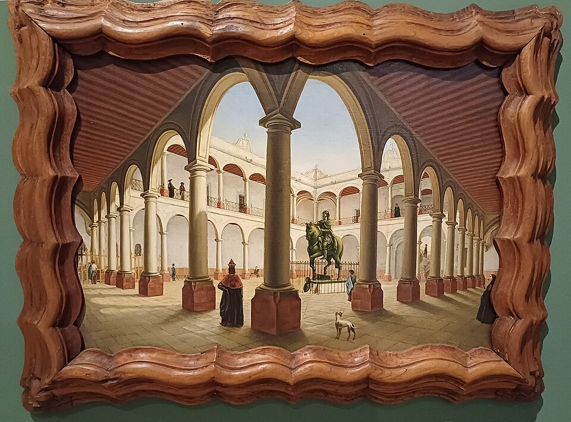

Una cédula real funda la universidad de México, primera casa de altos estudios de la Nueva España
Firmada por el príncipe don Felipe en nombre de Carlos V, la cédula manda erigir en esta capital un estudio general al modo de Salamanca. Habrá cátedras de teología, cánones, leyes y artes, y los cursos abrirán pronto.

Hay fiesta en el ánimo de esta ciudad: por cédula real dada en la villa de Toro y firmada por el príncipe don Felipe en nombre del emperador Carlos V, la Nueva España tendrá universidad. La cédula manda fundar en esta capital un estudio general donde se lean todas las facultades, con los privilegios y franquezas de que goza la universidad de Salamanca, madre de las letras castellanas. La noticia, esperada desde hace años por el ayuntamiento y por los prelados, corre de los colegios a los conventos, y no hay letrado ni estudiante que no la celebre como merced señaladísima.
La cédula dispone cátedras de teología, sagrada escritura, cánones, leyes, artes, retórica y gramática, para que los hijos de españoles y los naturales de estas tierras puedan estudiar sin cruzar el océano. Costeará su sostenimiento la real hacienda con mil pesos de oro de minas cada año. El buen suceso corona gestiones largas: las del primer virrey, don Antonio de Mendoza, que la pidió con insistencia; las del obispo fray Juan de Zumárraga, que ya descansa en Dios; y las del virrey don Luis de Velasco, a quien tocará ahora dar cuerpo a lo que el papel promete.
La Nueva España no parte de la nada. Desde hace décadas florecen aquí colegios como el de Santa Cruz de Tlatelolco, donde los hijos de la nobleza india aprendieron latín con admiración de los doctos, y el de San Juan de Letrán. Pero faltaba la corona del edificio: los grados mayores, que hasta hoy obligaban a los ingenios de esta tierra a embarcarse hacia Salamanca o Alcalá, con riesgo de la vida y gran costa. Con la merced de hoy, y con la semejante que se ha despachado para la Ciudad de los Reyes en el Perú, el saber universitario cruza por fin el océano.
En los patios de los conventos no se hablaba de otra cosa. Los frailes ven en la universidad un semillero de clérigos doctos para la conversión de los naturales; los vecinos, un lustre que iguala a México con las ciudades viejas de Castilla; los estudiantes, la puerta de los grados de bachiller, licenciado, maestro y doctor sin dejar la tierra donde nacieron. Se dice que los cursos abrirán pronto, cuando se provean las cátedras y se disponga casa digna. Ya se sueña con las borlas de colores y las procesiones doctorales que alegrarán estas calles enlosadas.
Este diario saluda la jornada como una de las más fecundas que ha registrado en estas tierras. Las armas ganaron este reino; las letras lo harán habitable y justo, si Dios quiere. Una ciudad que hace treinta años era campo de guerra tendrá universidad como Salamanca o París: eso da la medida de lo que aquí se ha edificado en una generación. Vendrán de sus aulas los teólogos, los jueces y los médicos que esta tierra necesita como el pan. Semilla es, y pequeña; pero de estas semillas ha visto el mundo crecer árboles que dan sombra durante siglos.